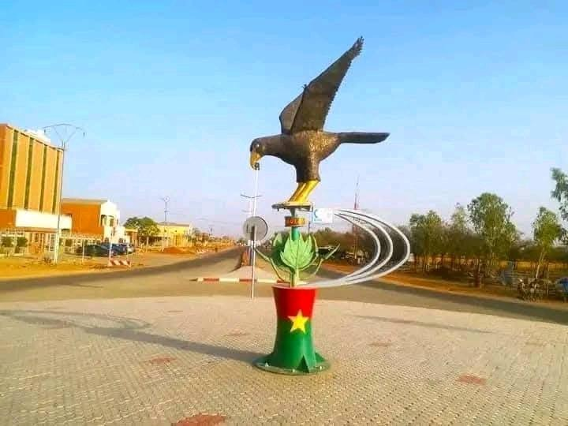

« Savanes fertiles et patrimoine vivant »
Pays : Burkina Faso
Statut : Région
Provinces : 3
Départements : 19
Chef-lieu : Manga
Gouverneur : Casimir Bouraogo Ségueda (depuis décembre 2014)
Code ISO 3166-2 : BF-07
Code INSD : 13
Population (2024) : 872 800 hab.
Densité : 77 hab./km²
Coordonnées : 11°30'00"N, 1°10'00"O
Superficie : 11 321 km²
Fuseau horaire : UTC+0
Indicatif téléphonique : +226

Présentation
Nazinon (anciennement région du Centre-Sud) est l'une des 17 régions administratives du Burkina Faso selon le découpage territorial révisé adopté le 2 juillet 2025. La région porte le nom du fleuve Nazinon (anciennement appelé Volta Rouge), un hydronyme adopté durant la Révolution démocratique et populaire. Elle abrite les célèbres ruines de Loropéni, classées au patrimoine mondial de l'UNESCO. C'est une région de transition entre la savane et les premières forêts du sud. Les ethnies Kasséna, Nankana et Mossi y perpétuent des traditions séculaires comme les fêtes des masques.
Tourisme & Culture
Ressources naturelles
Potentiel agricole 🌾
Potentiel éducatif 🏫
Potentiel commercial 🛒
Artisanat traditionnel
Spécialités culinaires
Galerie photos
Carte de situation
Provinces
Le saviez-vous ?
Les ruines de Loropéni sont les vestiges d'une forteresse en pierre datant du XIᵉ siècle, mieux conservées d'Afrique subsaharienne. Classées à l'UNESCO en 2009, elles étaient un maillon de la route commerciale transsaharienne reliant le Ghana au Mali. Nazinon est le nouveau nom de la région depuis juillet 2025, en référence au fleuve qui traverse le territoire.